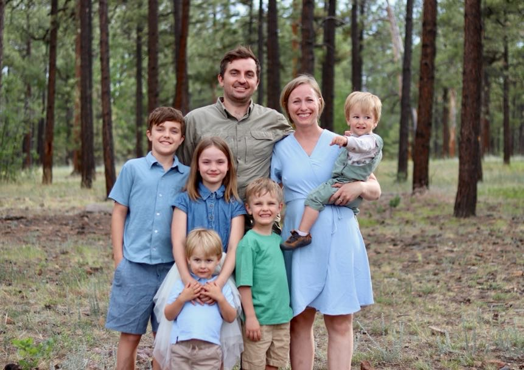

Our Story


Hi, I’m Patricia, the breeder behind Pat’s Poodle Pups & Moore. Our story begins back in 2002 when I was 11 yrs old. My family owned two springer spaniels that I loved with all my heart. I spent countless hours training, attending 4H, and grooming these family dogs. After that, my love for animals grew and I had the opportunity to take care of and own, chickens, pigs, goats, guinea pigs, gerbils, birds, and rabbits. I grew up with this love of animals and as an adult I still can’t get enough of any type of pets. College took me away from my birthplace in Tucson AZ, to Flagstaff AZ. While getting my nursing degree I got married and started a family. Unfortunately, my love for animals had been paused since my husband was highly allergic to pets. All kinds. EVEN dogs and cats. That’s when my search for a hypoallergenic dog came into play.

We bought Onyx, our very first goldendoodle and he changed our hearts. He was the best dog we have ever encountered. I got him certified to go visit patients at the local hospital and he just understood and followed all training commands. After that we heard that Onyx’s Mom was having her last litter of puppies, and we knew we needed to get a girl puppy and continue this line of FB2 doodles. We had now for four years been constantly asked where we got Onyx and how they could get a puppy like him.

That’s when Amber came into our lives. Amber came to us when she was 8 weeks old. She and Onyx bonded together and became our most amazing dogs! Amber is so patient and smart. She loves children and never fails to brighten our days. Amber is a F2B goldendoodle (19% Golden retriever 81% poodle) that weighs 58lbs. She is healthy, active, and non-shedding. So far, our pups have been 100% non-shedding. We always breed back to a poodle so the chance of getting a non-furnished puppy is very slim. DNA testing can be done before purchasing your puppy. I decided to start breeding Amber to share the best possible puppies with excellent personalities, temperament, and, most of all, health! Amber has been EMBARK cleared and OFA is pending. Click HERE to see her page.
Now we have continued this sweet line of standard goldendoodles and created our business in 2021 called Pat's Poodle Pups and Moore. We love them and we hope you love them too. If you ever wondered if your puppy was going to be pre-loved? Just know that little boys and girls spent most of their days making sure they were the most loved puppies! Amber has had 2 liters with huge success! She is an attentive and loving mom and my children and I love raising her puppies!
- Litter 1- - (2021) Amber and Loki - 12 puppies
- Litter 2- - (2024) Amber and Capt. Jack Sparrow - 11 puppies
- Litter 3- - expected August (2026) Amber and Gucci

Gucci enjoys life as both a cherished family member and a beloved stud. Whether he’s snuggled up beside us or playing with other dogs, Gucci’s gentle soul and soft spirit shine through. He adores cuddles and gets along beautifully with dogs of all sizes, other animals, and people alike. His calm, affectionate nature makes him a joy to be around. Gucci is the perfect example of everything we love about the Miniature Poodle: intelligent, beautiful, and irresistibly sweet. Structurally, he reflects excellent breed conformation, and as a proven stud, he consistently passes on not just his striking appearance but also his wonderful temperament. Gucci carries every color, making him a versatile stud for producing vibrant patterns and rich hues. Genetics: AT/AT, B/b, D/D, E/e, I/I, F/F, KY/KY, S/S Expected Size: 16" tall, 18 lbs. Health Testing: Clear for all genetic conditions except one copy of CDDY.
Expected colors:
Red, Sable, Tri Color, some Black
Expected litter:
I wanted to invite anyone who may be thinking about a new, little, fluffy addition to your family, to be put on the waitlist for Amber's upcoming litter!
Prices:
After much feedback from puppy buyers and other breeders, and with my costs being more this go-round, I will be raising the puppy prices with this litter. Anyone reserved on this waitlist, however, will be able to purchase a puppy for the current prices which are $1500 for a girl and $1200 for a boy, I personally feel that our wonderful doodles, Onyx and Amber, have been a huge blessing to our family and worth every penny! They are sure to provide you with many years of love, joy and companionship.
Expected Size:
30-40lbs (medium size)